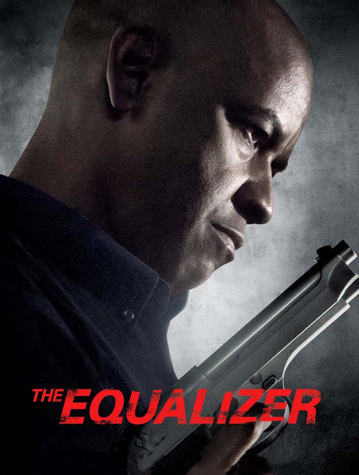

- Film izlemek
- Spor müsabakaları izlemek
İlgi Alanlarım
Film;
Adalet
McCall gizemli geçmişini geride bırakıp, sakin ve sessiz bir yaşama doğru yelken açar. Fakat acımasız Rus mafyasının kontrolü altındaki Teri isimli genç kızla tanıştığında onun içinde bulunduğu duruma kayıtsız kalamaz. Kendi kendisini emekli etmiş olan McCall, içindeki adalet duygusunun peşinden giderek Teri'ye yardım edecektir. Çünkü adaletin temsili olarak güçsüzün yanındadır... 80'lerde televizyonda gösterilen bir dizinin beyazperde uyarlaması olan yapımda başrolü deneyimli oyuncu Denzel Washington canlandırırken, ona hollywood'un genç ve yetenekli ismi Chloë Grace Moretz eşlik ediyor.
Adalet 2
Adalet / The Equalizer 2'de Robert McCall geçmişin izleriyle boğuşmaktadır. CIA'in gizli operasyon gücündeyken adaleti sağlayabilmenin huzurunu kaybetmiş olan McCall, hala ruhundaki boşlukları doldurmaya çalışmakta ve bir yol aramaktadır. Umutsuz durumdaki adalet arayıcılarına yardım eden ve haksızlıkları düzeltmek için mücadele veren McCall, günün birinde eski arkadaşı Susan Plummer'dan kötü haberler alır. Şimdi McCall bildiği en iyi şeyi yapmalı, kendi adaletini kendi sağlamalıdır.
Dizi;
Pera Palas'ta Gece Yarısı
Genç bir gazeteci olan Esra, Pera Palas Oteli hakkında bir yazı yazmakla görevlendirilir. Bu yüzden otele giden Esra, gezdiği odalardan birinin 1919 yılına açılan bir kapı olduğunu keşfeder. Bu inanılmaz keşfi sayesinde zamanda yolculuk yapan Esra, bu sayede Mustafa Kemal Atatürk'e karşı düzenlenen bir kompodan haberdar olur. Artık Esra Türkiye tarihinin akışını ve geleceğini korumak zorundadır. Ancak Esra bu sırada Halit adındaki gizemli bir adamla tanışmasıyla aslında hiçbir şeyin göründüğü gibi olmadığını anlar.
Kitap;
Nâzım ile Piraye

Işıklar saçacak kadar parlak bir şair ve çok sade bir kadın. Onlar Nâzım ile Piraye... Birbirine hiç benzemeyen bir kadın ve erkeğin edebiyat tarihine geçecek büyük aşkları. Onlar mutluluğu kovaladılar, çünkü mutluluk birlikte olmalarıydı, ama izin verilmedi. Nâzım âşıktı, Piraye âşık... Nâzım şiirleri kadar büyük ve benzersiz bir aşkın romanı... Bir aşk demir parmaklıklar ardında ne kadar sınanır? Bir kadını her şeyden çok seven bir erkek aynı zamanda bir başkasına âşık olabilir mi? Nâzım’ın şiirler yazdığı, “Kalbimin Kızıl Saçlı Bacısı” diyecek kadar sevdiği kadını bırakması mümkün mü? Piraye’nin ayrılık haberini aldıktan sonra ölüme yatışının öyküsü... Zincire vurulan Nâzım mıydı, Piraye mi, yoksa bir aşk mı?